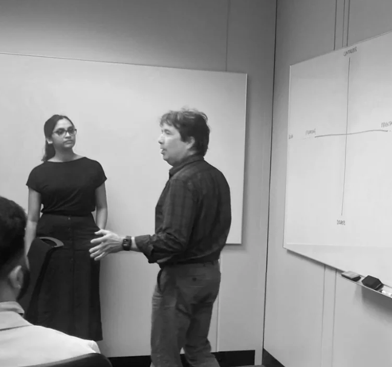
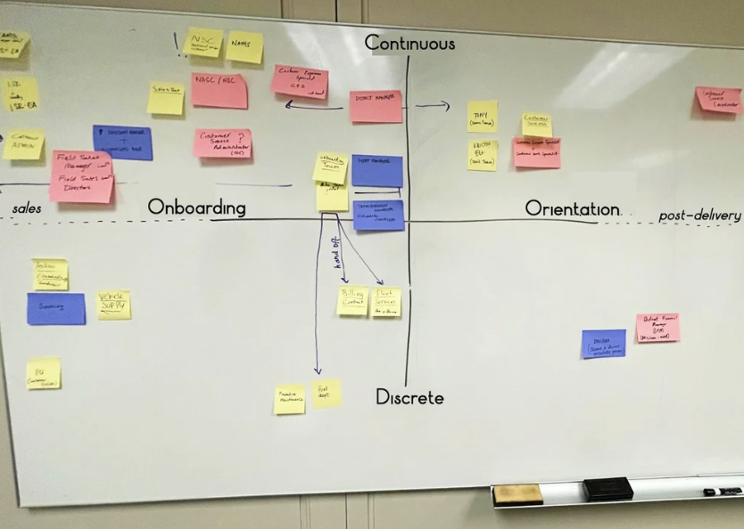
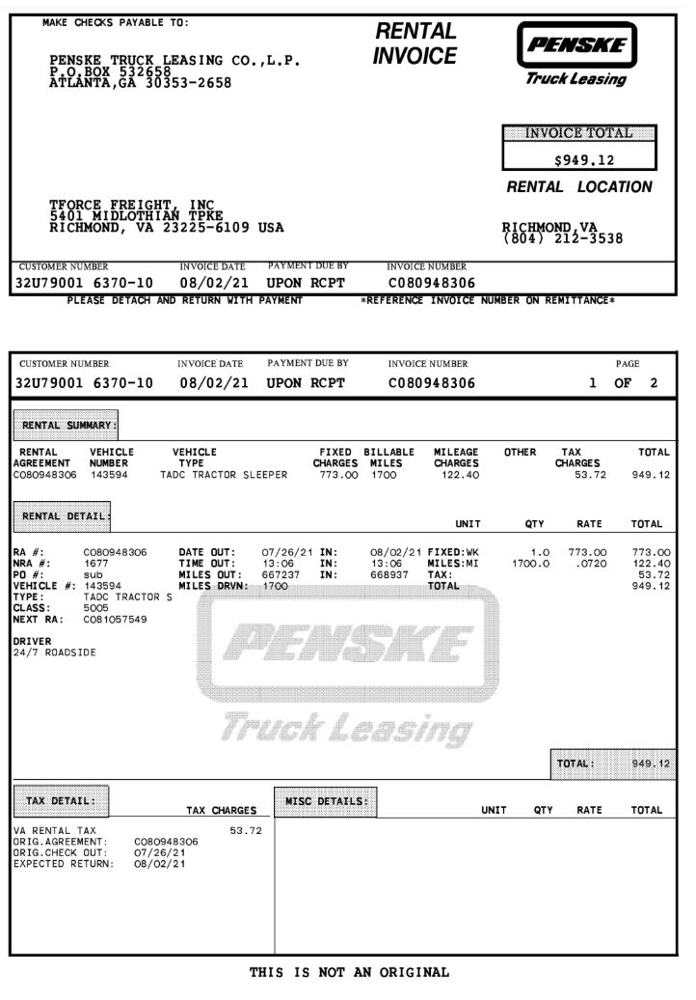
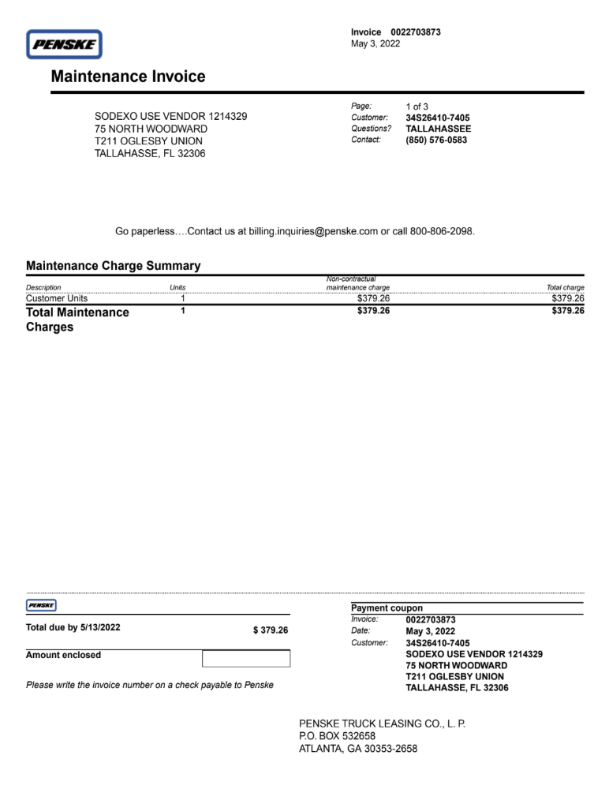
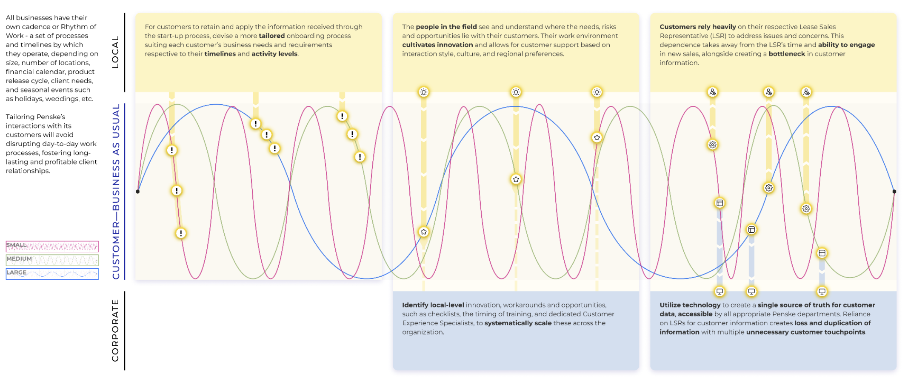
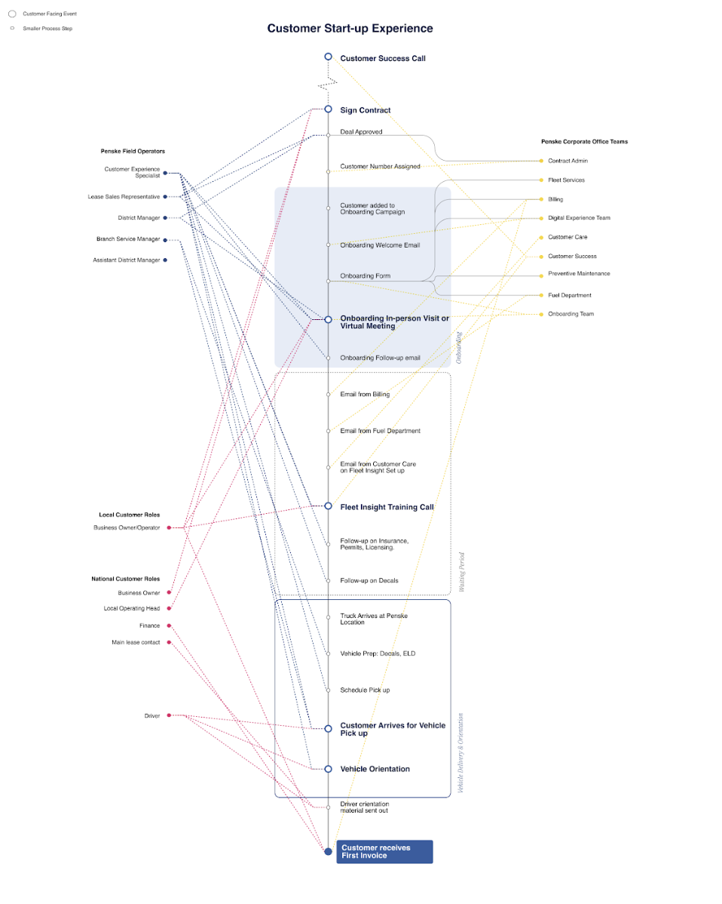
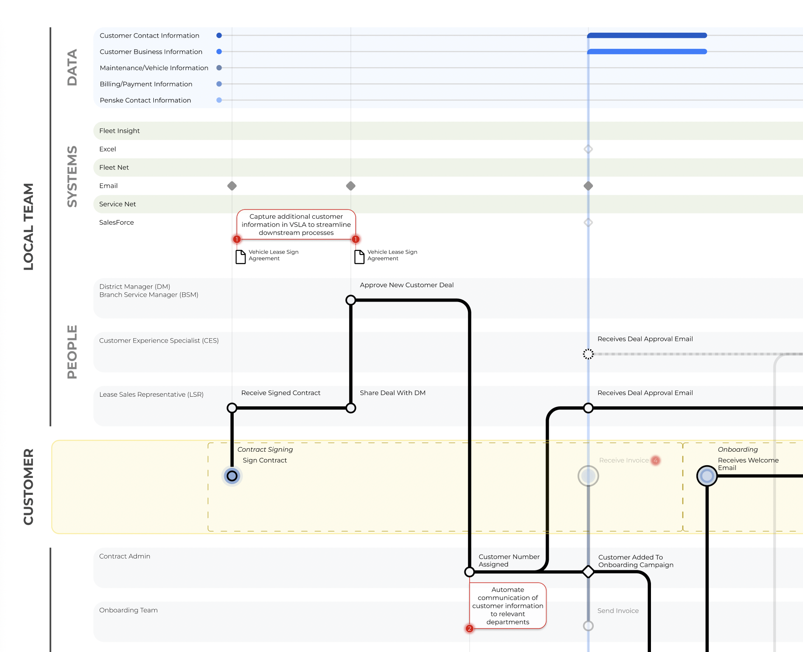

The problem
As pandemic-driven truck delivery delays mounted, Penske saw more customers slip away. The marketing team assumed frustration over the two-year wait was to blame and focused on messaging. In reality, the pandemic had transformed Penske's service from simple leasing to a complex rent-then-lease model, but the company's structure remained stuck in the pre-pandemic mode. Most customer losses occurred due to friction during the switch between these service models.
Customers were leaving because the rent-to-lease handoff was a maze the company itself couldn't see.
Methods used

Multi-region field interviews
A total of 47 interviews were conducted across five regions (Reading, Rochester, Milwaukee, Sacramento, and Boston), capturing voices from 9 corporate stakeholders, 30 field workers, and 8 customers navigating local mixed-fleet paths. The findings revealed that customers were not frustrated by the two-year wait itself, but by Penske's repeated failure to meet promised delivery dates and confusion caused by the rent-to-lease billing transition.
Most customers had made peace with the wait. The unexpected billing changes were the moment they left.

Shadowing sales reps
Field research included shadowing sales reps, revealing how Lease Sales Representatives patched up broken processes with personal spreadsheets, after-hours calls, and handwritten checklists tucked away in notebooks. These quiet fixes kept the real problems hidden from corporate leaders, as field staff absorbed the fallout. The insight that "every department has its own customer data source" emerged from these observations.
Every department had its own customer record. Field reps spent their day reconciling the gaps.
Penske's customer-onboarding was running on personal spreadsheets and handwritten checklists: invisible to corporate, fragile by design.

Tracing service changes from leasing to billing
I worked with my team to create two separate customer journeys by service type and pinpoint the points where friction showed up the most. For instance, the team traced the billing journey through both legacy product systems, mapping how customers navigated rent and lease invoices. They pinpointed exactly where confusion set in: invoices changed appearance, details grew harder to decipher, payment methods broke down, and new fuel receipt rules surfaced without warning. The rent-to-lease transition emerged as the main driver of customer losses. Additional costs added without explanation were a big red flag for small business owners, making decades-old loyal customers quit the service.
Decades-old loyal customers were quitting over unexplained line items they'd never seen before.


Artifacts to align stakeholders
The Rhythm of Work model
Every business operates on its own cadence — a set of processes and timelines shaped by size, number of locations, financial calendar, product-release cycle, client needs, and seasonal events. Penske's onboarding ran a single rhythm across customers who needed completely different ones. Mapping Penske's local, customer-led, and corporate-led actions against each customer cadence surfaced a hidden group: smaller operators without purchasing staff, getting hit hardest by the misalignment.

The Customer Start-up Visual
The Customer Start-up Visual became the client's most valued diagnostic tool. This illustration placed the customer at the center, making the maze of scattered contact points visible from their perspective for the first time. It united departments around the customer's true journey, serving as a shared starting point for redesigning the process.

Operational model
The team crafted a detailed operations model that traced all the process steps in the client journey, the staff responsible for each, the data needed to ensure customers receive the right level of onboarding support, the common human errors that occur at those stages, and the tools staff use along with the workarounds they require on a daily basis.
I printed this A1-size operations map to show all the details of the institutional breakdown at each step where the customer experienced frustration.

Outcomes
What started as a 5-month messaging brief became a long-term service-design engagement, with seven recommendations adopted and two named diagnostic models that became Penske's cross-departmental reference.
- The Customer Start-up Visual was adopted as Penske's shared cross-departmental reference for the customer journey.
- The mobile app product team rerouted onto a service-design-first roadmap after the engagement showed adoption was a service-design problem.
- The rent-to-lease billing transition was named as the primary driver of customer loss — with a standardization recommendation accepted by the billing organization.
- Boston's local delivery-delay management system was identified as a best practice for scaling across other districts.
- Smaller operators without purchasing staff were surfaced as a previously-invisible vulnerable customer segment requiring tailored service.
Context
Stakeholders. Engagement sponsor: Penske's senior marketing leadership. Operational stakeholders: corporate sales operations, customer success, the onboarding team, regional Penske offices, the billing department, and the product team. Customers: businesses across local, national, lease, contract maintenance, and interim-rental-to-lease paths, especially smaller operators without purchasing staff.
Scale. Five U.S. regions, three distinct customer journeys, seven Penske departments shaping the new-customer experience.
Timeline. Approximately 5 months in 2022, extended into a long-term engagement.